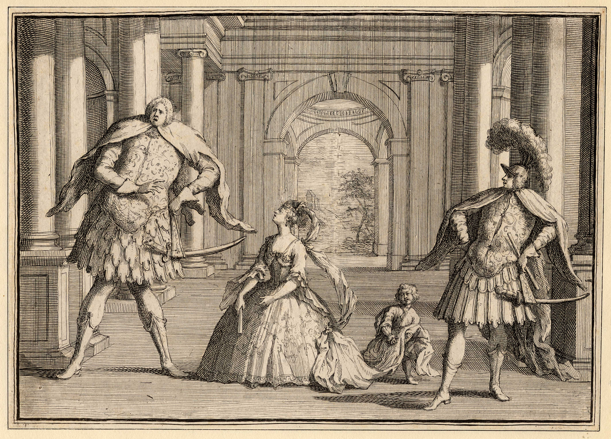
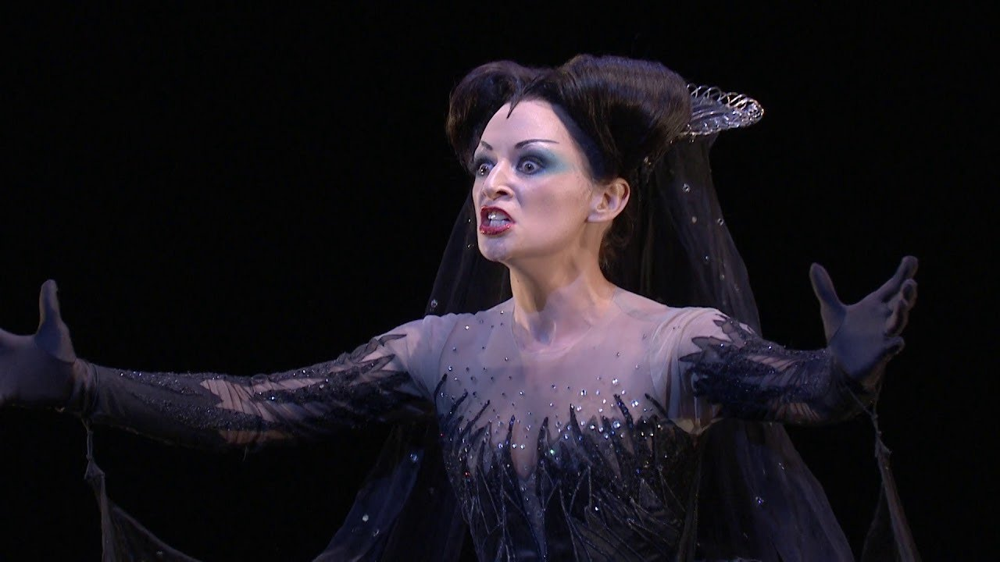

La ópera sigue triunfando
El género vocal profano más importante en el Clasicismo sigue siendo la ópera. Frente a los temas mitológicos y la música recargada de este género en la época barroca, en el Clasicismo surgen nuevos tipos de ópera que buscan temas más cercanos a la gente del pueblo y una música más sencilla y entendible:
- Ópera Seria: es la ópera tradicional italiana de carácter grave, aristocrático y trágico. Sus argumentos se basan en la mitología clásica o la historia antigua. Está escrita completamente en italiano y cantada de principio a fin (sin diálogos hablados).
- Ópera Bufa: es la comedia musical italiana. Tiene un carácter divertido, popular y satírico. Retrata situaciones de la vida cotidiana con personajes comunes (criados, burgueses). Al igual que la seria, es completamente cantada en italiano, pero con un estilo mucho más ágil y dinámico.
- Singspiel: es el género lírico popular de Alemania y Austria. Su principal diferencia es que combina diálogos hablados con partes cantadas (similar a la zarzuela española o el musical moderno). El idioma es el alemán y suele incluir elementos fantásticos, folclóricos o cómicos.
 |
 |
 |
| Ópera Seria | Ópera Bufa | Singspiel |
ESCUCHAMOS PERO NO JUZGAMOS: ÓPERA DEL CLASICISMO
Escucha los siguientes fragmentos de tres óperas: Idomeneo, re di Creta; Las bodas de Fígaro; La flauta mágica de W.A. Mozart. Responde a las siguientes preguntas:
- ¿Qué tipo de ópera de las que hemos visto crees que es cada una?
- ¿Qué características te han ayudado a identificarla?
Audición 4
Audición 5
Audición 6